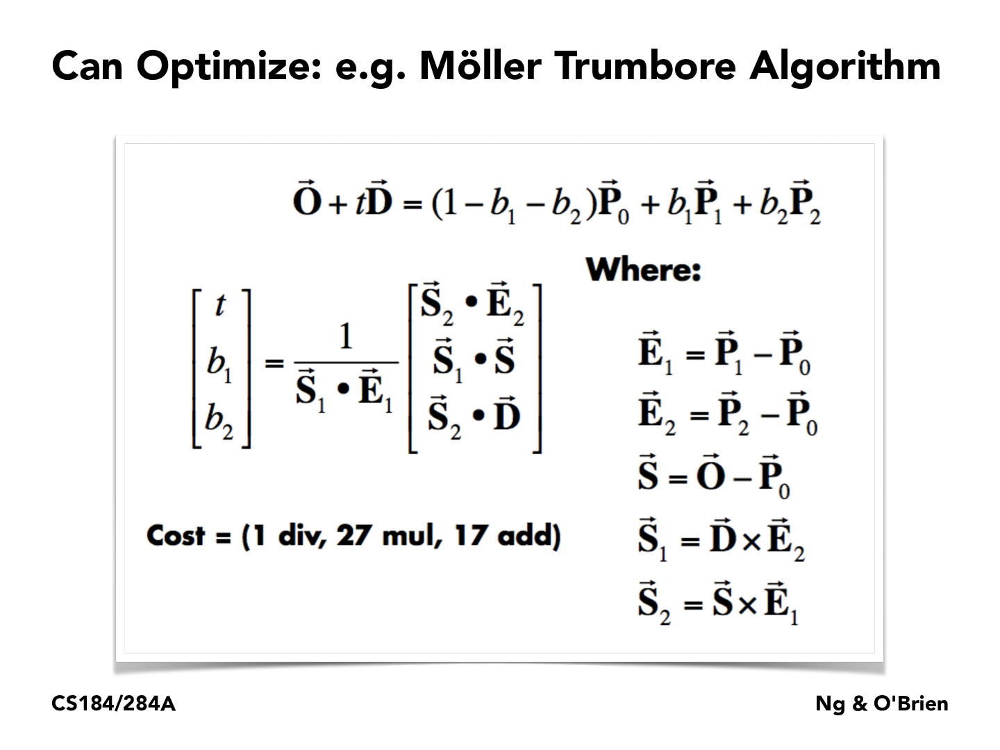
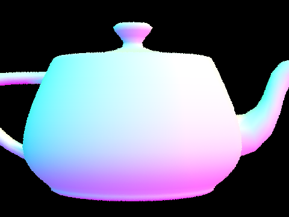
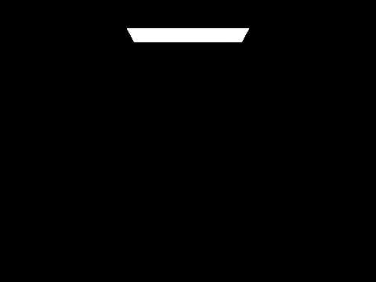
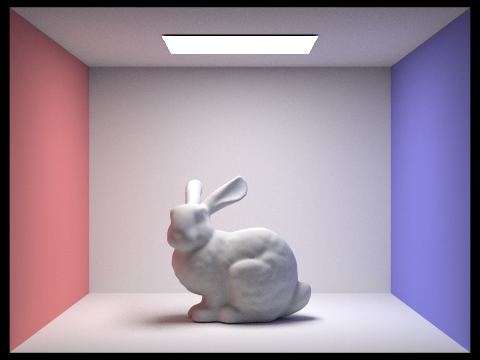

Overview
In this project, I worked on ray generation, ray tracing, creating bounding volume hierarchies, and illumination.
In part 1, I worked on camera ray generation from image coordinates to world coordinates, raytracing on pixels,
and primitive intersections of rays with triangles and spheres.
In part 2, I work on optimizing the raytracing process by creating bounding volume hierarchies in order to speed
up the raytracing process. By using BVHs, I can prune the search space for intersections by ignoring primitives
that are in a larger bounding box that the ray does not intersect.
In part 3, I work on direct illumination by implementing a hemisphere and important lighting function that
calculates the illumination on a surface from a light source.
In part 4, I work on global illumination by not only including direct illumination of light rays from a light
source to an object, but also how light rays bounce off objects onto other objects and affect the illumination of
the scenery.
Finally, in part 5, I work on optimizing the raytracing process by implementing adaptive sampling. This means that
for some pixels that converge relatively quickly, I can pre-emptively stop sampling rays for that pixel and move
on to the next pixel since any further samples would likely not contribute much to the final color of the pixel.
Part 1: Ray Generation and Scene Intersection (20 Points)
Walk through the ray generation and primitive intersection parts of the rendering pipeline.
In this part, I worked on camera ray generation from image coordinates to world coordinates, raytracing on pixels
of the image, and primitive intersections of rays with triangles and spheres.
In our rendering pipeline, we use a model of light that suggests light travels in straight rays from a light
source to potentially other objects, ultimately reflecting into the camera lens. In a naive implementation, this
would involve casting rays from all light sources in every direction even if the ray would not ultimately hit the
camera and would therefore be effectively wasted computation. To solve this, we use camera rays to create our
rendered images by casting rays from the camera to each pixel, randomly sampling many rays for each pixel, to get
the light and ultimately RGB value for each pixel. Primitive intersection is used to check for ray intersections
with the given shape, which is important in light calculations and whether rays are blocked, etc.
Explain the triangle intersection algorithm you implemented in your own words.
The triangle intersection algorithm I used was the Moller Trumbore intersection algorithm. I used the formulas found on the slide below.
In my implementation, I compute the above intermediate vectors and ultimately arrive at the [t, b1, b2] vector we see. t is the time of intersection of the ray with the triangle. (1 - b1 - b2), b1, b2 are barycentric coordinates that describe the point of intersection on the triangle. After calculating these values, I check the validity of t and the barycentric coordinates (whether t is within the min_t and max_t, the barycentric coordinates are within the range [0, 1], and the sum of the barycentric coordinates is less than or equal to 1). If all of these conditions are met, then the ray intersects the triangle, and I update the relevant data structures. Specifically, I update the ray's max_t to the t value I calculated, then update the corresponding members of the intersection data structure (t, normal vector at point of intersection, primitive, bsdf).
Show images with normal shading for a few small .dae files.

|

|

|

|
Part 2: Bounding Volume Hierarchy (20 Points)
Walk through your BVH construction algorithm. Explain the heuristic you chose for picking the splitting point.
To construct my BVH, I first decide what axis I want to split the primitives along. I do this by getting the
extent of the bounding box of all the primitives and try to split along the longest axis. By default I split along
the x axis, but if the y axis is longer than both other axes, then I split along the y axis and similarly for the
z axis.
I then sort the primitives along the chosen axis by comparing the centroid's coordinate on the chosen axis of the
primitives. I split the primitives into two equally sized groups based on this sorting, then recursively call
construct_bvh on each half.
Show images with normal shading for a few large .dae files that you can only render with BVH acceleration.

|

|

|
|
Compare rendering times on a few scenes with moderately complex geometries with and without BVH acceleration. Present your results in a one-paragraph analysis.
On my local Macbook Air M1 (base model) on battery power, I compared the execution time of the pathtracer with and without BVH acceleration, and as expected, the time with BVH acceleration was significantly faster than without. This is because without acceleration, the pathtracer has to check every single primitive in the scene for intersection with the ray, whereas with BVH acceleration, the pathtracer can prune the search space by checking only the primitives in the BVH nodes that intersect the ray by checking the bounding box of the node and ignoring nodes that the ray doesn't intersect with (thereby ignoring all the primitives in that node). The table below shows the execution time for each scene with and without BVH acceleration.
| Scene | Primitives | Without BVH | With BVH |
|---|---|---|---|
| CBbunny.dae | 28588 | 129.1630s | 0.0999s |
| beetle.dae | 7558 | 25.0337s | 0.0870s |
| banana.dae | 2458 | 7.3914s | 0.0728s |
| cow.dae | 5856 | 18.6802s | 0.0942s |
Part 3: Direct Illumination (20 Points)
Walk through both implementations of the direct lighting function.
For hemisphere lighting, we take num_samples vector samples of the unit hemisphere on the bdsf of the
intersection. For each vector sample, we create a light ray from the hit point along the direction of the sampled
vector. We then see if the light ray intersects anything in the bvh, and if it does, then we get the emitted light
from that object using the method described in lecture and divide by the pdf of the sampled vector, since we are
estimating the lighting by monte carlo estimation. Finally, after taking all the samples, I divide by num_samples
to complete the estimation.
For importance lighting, instead of sampling uniformly from the hemisphere at the intersection, we instead sample
from the lights. We iterate over the lights, and for each light, we take ns_area_light samples of the light,
unless it is a point light source which we only sample once. For each sample of a given light, we see if it
intersects anything between the hit point and the light, and if it doesn't, then we add the emitted light from the
light dividied by the pdf similarly to how we do it for hemisphere lighting. After sampling as much as necessary
for a given light, we add the samples divided by the number of samples we used to the output, and ultimately
return this lighting output.
Show some images rendered with both implementations of the direct lighting function.
| Uniform Hemisphere Sampling | Light Sampling |
|---|---|
|
|

|
|
|
|
Focus on one particular scene with at least one area light and compare the noise levels in soft shadows when rendering with 1, 4, 16, and 64 light rays (the -l flag) and with 1 sample per pixel (the -s flag) using light sampling, not uniform hemisphere sampling.
|
|
|
|
|
|
As we can see, the noise level on the soft shadows gradually becomes smoother and less noisy as we increase the number of light rays. With low levels of light rays, the color difference between the hard and soft parts of the shadow is less clear. This is because as we increase the number of light rays, we are sampling more of the light, and thus we are getting a more accurate estimate of the lighting.
Compare the results between uniform hemisphere sampling and lighting sampling in a one-paragraph analysis.
Uniform hemisphere sampling samples vectors from a point out in all directions in the hemisphere. This means that some of the sampled vectors will contribute little to even nothing at all to the irradiance of that point. This is because some of the vectors might not point towards a light source, so even with the same number of light rays, the image when using hemisphere lighting will look noisier or darker than the same settings when using importance lighting. Lighting sampling is better because we sample vectors from the light sources instead, which will likely contribute more to the lighting on the point. This means that we will get a more accurate estimate of the lighting, and therefore the image will look less noisy and more accurate.
Part 4: Global Illumination (20 Points)
Walk through your implementation of the indirect lighting function.
First, I reuse my old code in one_bounce_radiance and add that to L_out. Then I use the pseudocode from lecture as a guide for the rest of the function. I set my termination probability to be 0.35 arbitrarily (middle of the 0.3 - 0.4 range given), and if the russian roulette check passes, I perform much of the same operations as I do in the other lighting functions. I sample a ray from the intersection, create a new ray incident to the intersection and reduce the new ray's depth by one. Then, if the new ray's depth is greater than 0 and it intersects an object, I recursively call the indirect lighting function and use that to add to L_out using the formula outlined in lecture.
Show some images rendered with global (direct and indirect) illumination. Use 1024 samples per pixel.
|
|
|
Pick one scene and compare rendered views first with only direct illumination, then only indirect illumination. Use 1024 samples per pixel. (You will have to edit PathTracer::at_least_one_bounce_radiance(...) in your code to generate these views.)
|
|
|
If we only use direct illumination, we can see that the ceiling of the room is completely dark, save for the light source itself. We can also see that only the tops of the spheres are illuminated, while the bottoms are cast in shadow along with the floor where the sphere's direct shadow would be. When looking at the image of only indirect illumination, the spheres themselves are mostly illuminated, and they even have hints of red and blue from the lighting that is bouncing off the left red and right blue walls. The ceiling is completely lit up to reveal that it is white, and by contrast the tops of the spheres are darker than the bottoms. The shadows on the floor are also not as dark, with only the direct bottoms of the spheres being cast in shadow.
For CBbunny.dae, compare rendered views with max_ray_depth set to 0, 1, 2, 3, and 100 (the -m flag). Use 1024 samples per pixel.
|

|
|
|
|

|
|
|
With m=0, we only see the light source on the ceiling and nothing else since we are only seeing light that has no
bouncing at all, so all the light coming from the scene to the camera is just the light emitting from the light
source.
With m=1, we get only the direct lighting, so only light rays that directly come from the light source to an
object are visible. Similar to the direct illumination image of the spheres from the previous section, the ceiling
is completely black and the shadows on the floor are very dark while the top of the bunny is bright.
When m=2, we start to see some of the indirect illumination come through. The ceiling is now lit up, and the
bottom sides of the bunny have light on them now, with the left side of the bunny having some red color from the
red wall and the right side having some blue color from the blue wall. The shadows on the floor are not as dark as
they were before.
When m=3, the shadows on the floor are even lighter than they were when m=2, and we see more of the red and blue
colors on the bunny from the walls. In general, there appears to be more light in the scene.
For m=100, we see similar effects of the step between m=2 and m=3, though it is harder to see. The room does
appear to be brighter.
Pick one scene and compare rendered views with various sample-per-pixel rates, including at least 1, 2, 4, 8, 16, 64, and 1024. Use 4 light rays. I used m=5 depth.
|
|
|
|
|
|
|
|

|
|
|
As we increase the number of samples per pixel, the image gradually becomes less noisy, with the jump between 64 and 1024 samples being the most notable. The 1024 samples per pixel image is much clearer than the other images.
Part 5: Adaptive Sampling (20 Points)
Explain adaptive sampling. Walk through your implementation of the adaptive sampling.
Adaptive sampling is an optimization to pixel raytracing by reducing the number of samples we calculate for a
pixel that we determined has converged. At a high level, for each pixel whenever we calculate samplesPerBatch
number of samples for that pixel, we check if the pixel has converged with a 95% confidence, and if it has, then
we stop sampling for that pixel.
In my particular implementation of adaptive sampling, I keep track of s1 and s2 variables which are the summations
of each sample's illumination and the square of each sample's illumination respectively. Whenever I calculate
samplesPerBatch number of samples for a pixel, I check if the pixel has converged with a 95% confidence by
calculating the mean and variance of the samples so far, defining a variable
I = 1.96 * σ / sqrt(n)If this value is less than or equal to the max tolerance * mean, then I consider it converged and stop sampling for the pixel.
Pick two scenes and render them with at least 2048 samples per pixel. Show a good sampling rate image with clearly visible differences in sampling rate over various regions and pixels. Include both your sample rate image, which shows your how your adaptive sampling changes depending on which part of the image you are rendering, and your noise-free rendered result. Use 1 sample per light and at least 5 for max ray depth.
|
|
|
|
|
|